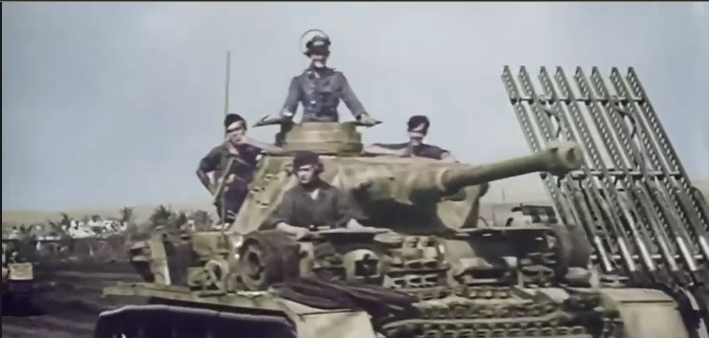
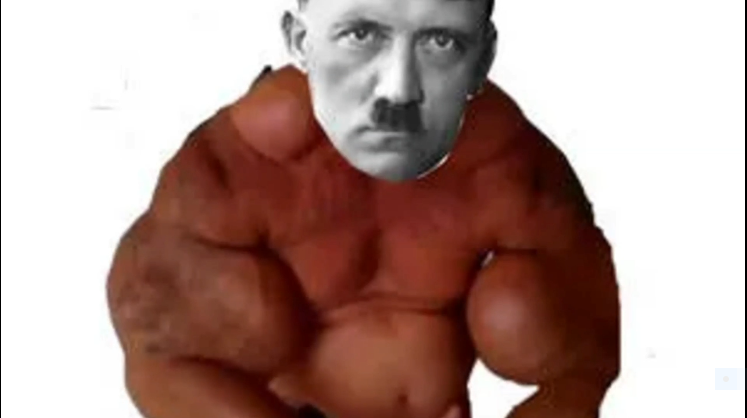

Projekty našich spolužáků
Tady si můžete zobrazit projekty našich spolužáků.
Bitva u Stalingaru
Vytvořil(i): Martin Heřman, Lukáš Nevrla, Jaroslav Herda
Auschwitz
Vytvořil(i): Jaroslav Poddaný, Myron Oleksij
Holocaust neboli problematické vymezení
Vytvořil(i): Arthur Hladík
Operace Overlord
Vytvořil(i): František Kovařík, Štěpán Pokorný, Vašek
Ne-Family friendly dějepis
Vytvořil(i): Lukáš Hrubý, Miroslav Hejný, Matyáš Stránský
nigger.exe.cxx.cpp.mp3.mp4
Vytvořil(i): Jan Fidra, Jan Mittasch